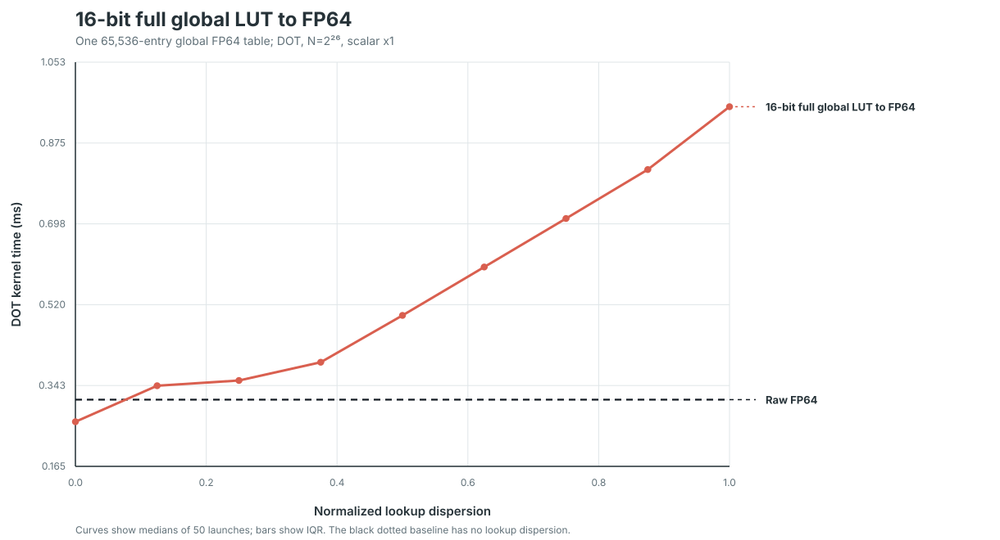
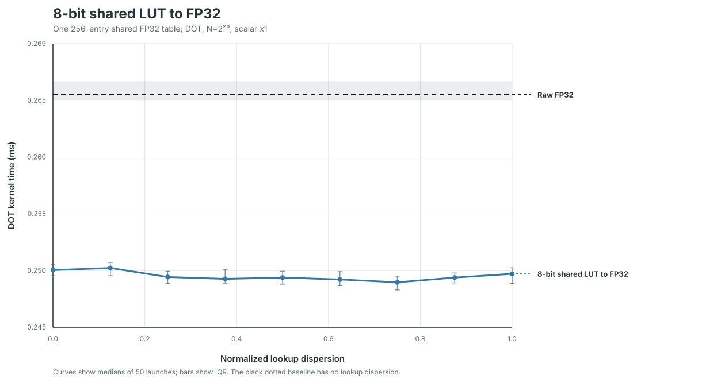
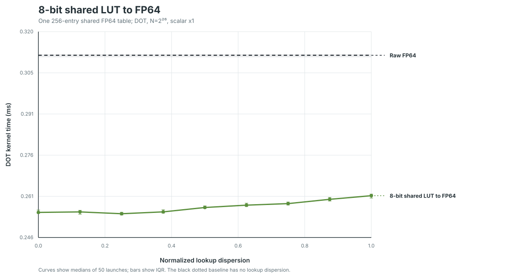
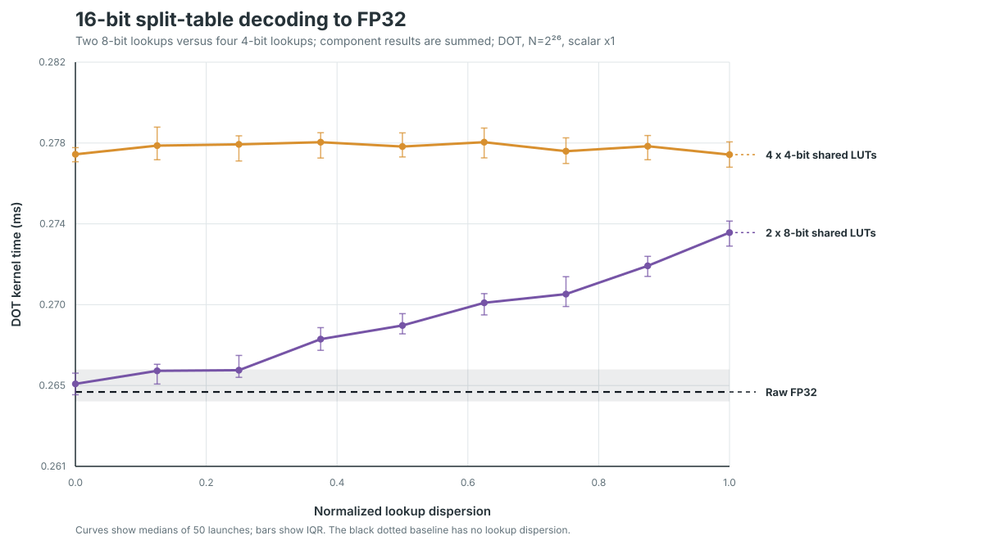
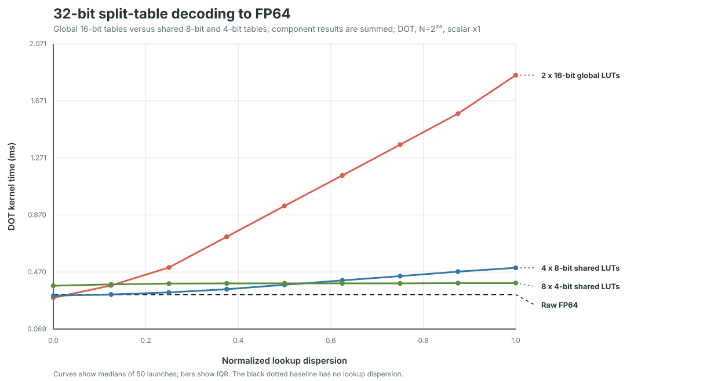

Lookup-table decomposition performance
Five DOT experiments isolate table width, table placement, arithmetic type, and the number of component lookups. Every component table receives the same target normalized lookup dispersion. Shared tables are staged once per block inside the timed first-stage kernel.
Input
N=2^26, scalar x1, independent left/right fieldsGeometry512 × 256 first stage plus the same final reduction
Timing10 warmups and 50 measured launches per point
BaselinesRaw FP32 0.265136 ms; raw FP64 0.311856 ms
1. 16-bit full global LUT to FP64

X=1 / X=0 median time: 16-bit full global LUT to FP64: 3.63×
2. 8-bit shared LUT to FP32

X=1 / X=0 median time: 8-bit shared LUT to FP32: 1.00×
3. 8-bit shared LUT to FP64

X=1 / X=0 median time: 8-bit shared LUT to FP64: 1.02×
4. 16-bit split-table decoding to FP32

X=1 / X=0 median time: 2 x 8-bit shared LUTs: 1.03×, 4 x 4-bit shared LUTs: 1.00×
5. 32-bit split-table decoding to FP64

X=1 / X=0 median time: 2 x 16-bit global LUTs: 6.41×, 4 x 8-bit shared LUTs: 1.65×, 8 x 4-bit shared LUTs: 1.05×
Artifacts. Raw timing samples · Access diagnostics · Raw FP32 source samples · Timing summary · Baseline summary